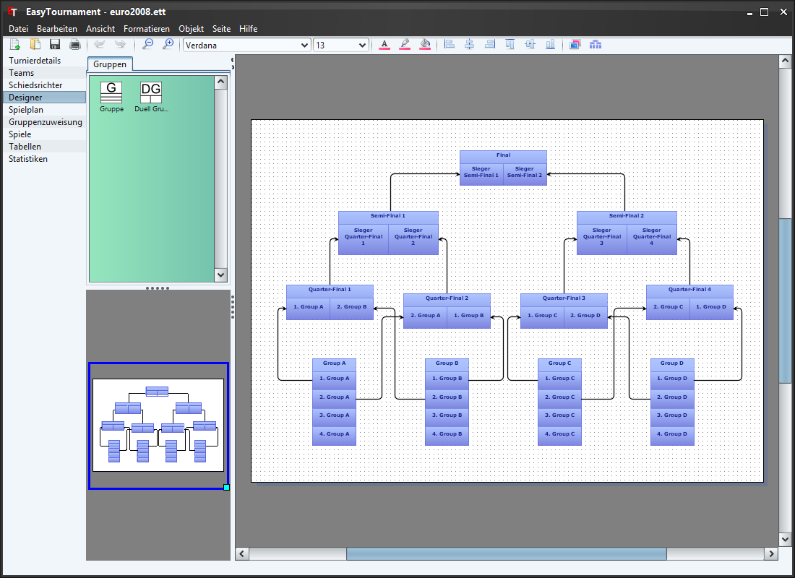

Der Designer ist das Herzstück der Applikation. Hier wird der Turnierablauf festgelegt.
Die verfügbaren Gruppenelemente sind in der grünen Box links sichtbar und können mit der Maus auf die Designer-Seite gezogen werden. Bereits eingefügte Gruppen können wie in jedem anderen Grafikprogramm kopiert und mit der Delete-Taste gelöscht werden.
Mit einem Doppelklick auf eine Gruppe oder über das Kontextmenü (rechte Maustaste) kann diese angepasst werden. Mehr dazu erfahren sie im Kapitel Gruppe.
Die Pfeile zeigen an, in welche Gruppe ein Team kommt, falls es eine bestimmte Position erreicht hat. Im Bild oben, erreicht z.B. der 1. plazierte der Gruppe A das "Quater-Final 1" und der Gewinner dieses Viertelfinals des Halbfinale "Semi-Final 1".
Pfeile erstellen sie ganz einfach indem sie auf die Startposition klicken und die linke Maustaste gedrückt halten, so auf die Zielposition fahren und dort die Maustaste wieder loslassen.
Bei Duell Gruppen sind Pfeile von der linken Position die des Gewinners und von der Rechten die des Verlierers dieses Duells.
Ein Team kann in mehrere Gruppen kommen, jede Position hat aber maximal einen eingehenden Pfeil. Logischerweise sind keine Kreise erlaubt.
Um eine Gruppe verschieben zu können müssen sie die jeweilige Gruppe im obersten Bereich anklicken, halten und verschieben.
Der Designer bietet diverse Grafikoperationen wie Farbe und Schrift ändern. Dazu muss die Gruppe, Position oder der Peil markiert und danach die jeweilige Operation ausgeführt werden. Möchten sie die Standardfarbe/-schriftart ändern, dann können sie dies in den Einstellungen machen. Mehr dazu erfahren sie im Kapitel Einstellungen.
Die graphischen Möglichkeiten sind jedoch zurzeit sehr beschränkt. Weil wir mehr Gewicht auf das Erstellen eines Ablaufs als auf den graphischen Aspekt legen, wird sich dies in der Zukunft auch nicht gross ändern. Wer das Turnier schön gestallten möchte, dem empfehlen wir, das Diagramm als SVG-Datei zu exportieren und dann in einem Grafikprogramm wie Inkscape weiter zu bearbeiten.
Durch klicken und ziehen auf der obersten Linie in der Gruppe (im Bild oben rot markiert) kann die Grösse des Titelbereichs geändert werden.
Über das Symbol "Team-Ansicht" (siehe Bild oben) lassen sich die Team Namen einblenden.
Das Diagramm kann man für die weitere Bearbeitung mit einem anderen Programm über das Menü "Datei"->"Exportieren..." speichern. Im Dialogfenster muss dazu der Eintrag "Turnierdiagramm" gewählt werden. Nebst SVG kann das Diagramm auch als JPG oder XML exportiert werden.
Ein Diagramm aus einem anderen Turnier lässt sich ebenfalls ganz einfach über das Menü "Datei"->"Importieren..." erreichen. Im Dialogfenster muss dazu der Eintrag "Turnierdiagramm" gewählt werden.